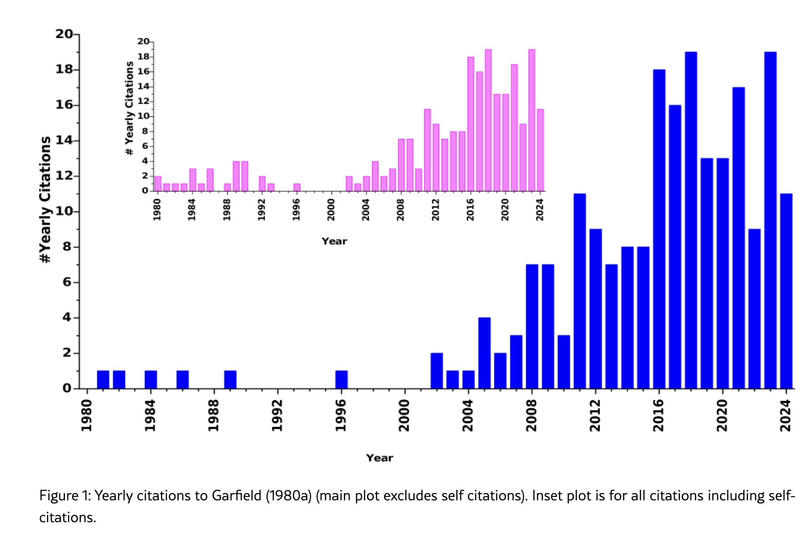

The man who studied delayed recognition, and then suffered it
Eugene Garfield is the reason we count citations at all. He built the Science Citation Index, he gave us the impact factor, and in 1980 he wrote a short piece in Current Contents with a plain title: “Premature discovery or delayed recognition-why?” In it he named a thing every researcher half-suspects is real. Some papers sit almost uncited for years, then wake up and get cited a lot, long after most of the people who could have used them have moved on. Anthony van Raan later borrowed a nicer name for these papers from Perrault and the Brothers Grimm: sleeping beauties.
Here is the joke. Garfield’s own paper on delayed recognition was itself delayed-recognized.
That’s the finding of a 2025 preprint by Tariq Ahmad Mir and Marcel Ausloos, Forsaking your own (arXiv:2512.16943). It is a preprint, so treat it as a strong claim, not a settled one. But the claim is clean, and I’ve been chewing on it for a week.
The numbers
Garfield published the paper in 1980. By 2004 it had collected about 10 citations. That is 0.4 citations a year for a quarter century, from the single most cited name in the field that invented citation counting. For 23 of those years it never once cracked more than one citation in a year. The authors call it a deep sleep of 28 years.
Then it woke. Counting up to 15 September 2025, they find 45 citations in Scopus, 93 in Web of Science, and 205 in Google Scholar, which they reconcile to 214 unique citing papers (234 if you count Garfield citing himself). A paper that averaged one citation every two and a half years for decades is now a normal, respectably cited paper. On the beauty coefficient, a standard sleeping-beauty score, it lands at 159.55 and 144.62 across two citation peaks, in 2018 and 2023. Whatever threshold you pick, it qualifies.

Twenty-three years of flat, then the wake-up. The main plot drops self-citations; the inset keeps them. Note where the floor ends: 2004, the year van Raan published.
Someone has to be the prince
What woke it up? Van Raan’s 2004 paper, the one that rechristened these papers “sleeping beauties.” After 2004 Garfield’s paper gets cited far more, and Mir and Ausloos note that in 141 of the 187 citations it collected after van Raan, roughly three quarters, it is co-cited with van Raan. The old paper rode in on the coattails of the new one.
There is an uncomfortable lesson here, and it is not about Garfield. Van Raan does not even cite Garfield’s 1980 paper. The revival happened anyway, because a well-placed, well-cited paper made the topic legible again and people went looking for the roots. Garfield’s paper needed a prince. It got one by luck, not because the work finally spoke for itself.
That’s the part I keep turning over. We tell ourselves that good work eventually gets found on merit. This is a case study in the opposite. The idea was correct. The author was famous. The paper still sat there for 28 years, and what saved it was somebody else’s visibility, not its own quality.
Where the story gets shakier
I run a company whose whole premise is that good research gets ignored and that being right isn’t enough. So I’m the last person you should trust to be skeptical here, and I want to be anyway.
“Delayed recognition” is not a fact of nature. It is a definition, and the definitions are somewhat arbitrary. Garfield’s own rule of thumb was 10 or fewer citations at age 10 and a tenfold jump by age 20. Van Raan added his own thresholds for the depth and length of the sleep. The beauty coefficient is yet another formula. Move the cutoffs and some sleeping beauties stop being beauties.
The authors are honest about a messier problem too. Garfield published in Current Contents, which was not peer reviewed, so Web of Science and Scopus record its metadata badly. Web of Science at one point piled the citations of 52 different articles from one 1980 issue onto a single paper. Every count above came from manual cleanup across three databases. And, again, it is a preprint. None of that kills the story. It just means the exact numbers matter less than the shape, and the shape is not in doubt.
If your work is being ignored right now
Read this as comfort or as a warning. I mean both.
The comfort: silence is not a verdict. Garfield’s paper was not wrong for 28 years and then suddenly right. It was the same paper the whole time. If your work is being ignored, that’s information about attention, not about quality.
The warning: attention does not show up on its own, and it did not show up for Garfield either. His paper waited a quarter century for an accident. Most papers never get a famous prince to co-cite them into daylight, and most of us don’t have Garfield’s name on the byline. If nobody knows the work exists, its merit never gets a turn.
So the question the paper leaves me with isn’t whether your good work will be recognized. It’s who, exactly, you’re counting on to be your prince, and whether it’s wise to wait for one to wander by.
Figure: Mir & Ausloos, Forsaking your own (arXiv:2512.16943), Figure 1. Reproduced under CC BY 4.0.